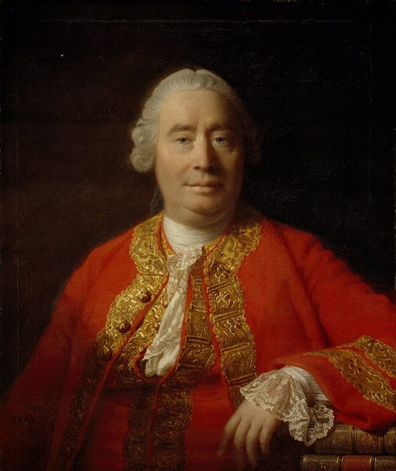
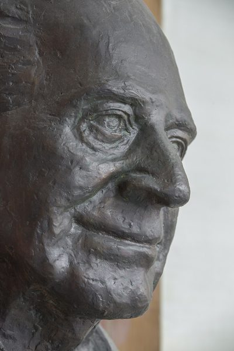

the efficient-market religion
… the efficient-market religion of the 1960s …
（被当成）宗教（的）有效市场理论
religion 是挖苦：大家信它像信教，不去检验。
这一章把第一部一直在说的「别信平静的过去」带进科学哲学：凭什么从看过的东西推到没看过的？作者先摆出休谟的问题和白天鹅，再拿一位真实的交易员 Niederhoffer 当例子，接着讲自己怎样通过索罗斯读到 Popper，中间插进书店的回忆、Popper 的八卦和一小段讲记忆的话，最后交出他自己的办法。读的时候抓一条线：观察和数据能替你做什么、不能做什么。好玩的是布什总统「统计上永生」的玩笑和占星家的托词。
第 6 章最后讲罐子和偷偷换球的小孩：罐子本身在变，抽得再多也推不出未来。这一章接着问，从过去推到未来这件事本身靠不靠得住。它是第一部的最后一章，用的是休谟、Popper 这些哲学家的名字，例子仍然来自交易室。§4 回提第 3 章「火炉很烫」那一节，§6 回提第 4 章的维也纳学派，§10 回提第 1、5 章的 Carlos 和 John。读完这一章，第一部就结束了。
§6 作者说 Popper 给了归纳问题（在他看来）唯一的答案，还自称「极度天真」的证伪主义者。这是他的立场；今天不少科学哲学家认为，光靠证伪说明不了科学怎样运作。读的时候把它当作者的选择，理由在页末。
见过一万次「没出事」，能说明下一次不会出事吗？
读的时候带着这几个问题。不用先找答案，读完回来对照「检查一下理解」。
前两节很短，是一块哲学的地基：先说问题在交易里最要紧，再交代白天鹅的出处和培根、休谟。§3 是全章的主体，围着一个真实的交易员转：从「可检验的说法要检验」讲起，插进车祸、四千只天鹅、布什总统几个小例子，再落到他自己的那次大亏和他的好胜心。§4、§5 突然变成作者的自传：怎样通过索罗斯读到 Popper，夹着对索罗斯的长篇评点、黎巴嫩战争后的「反知识」阶段和一家书店的回忆，读到这里会觉得「离题了」。§6 回到正题，是全章最像哲学课的一节。§7 到 §9 都很短，像三张便条：开放社会、Popper 的为人、记忆。§10 作者交出自己的办法，§11 是写完第一部的感想。
这一页就是原书和译本的第 7 章，一共 11 节。粗体是本站给的节名，后面是档和译本字数；下面是译本的小标题和这一节在译本电子书里开头的几个字（搜它就能跳过去），再下面是英文原文的开头。「先读」是这一章的骨架，「有空」好看、跳过不丢线，「可跳过」读不读都行。读完打个勾。
先把这一页用到、作者默认你懂的几个概念讲一遍。讲的是概念本身，作者拿它推出什么，读原书时自己看。别页讲过的概念，点链接过去看。
归纳是从许多个别的观察推出一条一般的结论：见过的天鹅都是白的，于是说天鹅都是白的；服务器一千天没宕过机，于是说它很稳。日常生活离不开归纳。麻烦在于，逻辑上它永远不保险：再多的个例也保证不了下一个。哲学上把「凭什么从过去推到未来」叫归纳问题，通常归到 18 世纪的休谟名下。
反过来却不一样：一条「所有……都……」的结论，一个反例就能推翻。这种证实难、推翻易的不对称，是这一章的地基。这一章的黑天鹅就是那个反例，是逻辑上的用法；作者 2007 年那本《黑天鹅》里的意思更宽，见黑天鹅。
在这一页：§1 把上一章的平稳性问题抬到哲学上；§2 交代出处；§3、§6、§9 各从一个角度用它。
哲学里的经验主义说，知识来自观察和经验，和「靠纯推理」的路子相对；培根、休谟都算这一路。实证主义是另一回事：19 世纪法国的孔德提出，主张一切学问都照自然科学的样子来做；20 世纪的维也纳学派把它发展成逻辑实证主义，要求有意义的说法都要能被经验证实。
作者用 empiricism 有自己的意思，写在 §3 的一条星号脚注里：不只是「看现实」，而是严格避免把看到的东西推广到没看到的地方。他批评的「天真的经验主义」，是直接把过去的数据当成规律。读这一章时把两个词分开：§3 讲 Niederhoffer 时说的是经验主义；§6 说 Popper 是解毒剂的，是实证主义。本站正文分别写经验主义、实证主义。
在这一页：§2、§3 讲经验主义怎样走过头；§6 讲 Popper 和实证主义。两个词怎样译，见「译本勘误」。
Popper 的回答是：科学理论不靠「被证实」立足，而靠「能被推翻」。一条理论要说清楚，观察到什么就算它错了；经得住一次次认真的检验，就暂时留着，但它永远只是「还没被推翻」。给不出任何「我错了」的条件的说法，他认为不算科学。什么算科学、什么不算，这条线怎么划，叫划界问题（demarcation，译本：分界問題）。
躲开证伪最常见的办法是辅助假说（auxiliary hypotheses，译本：輔助性假說）：预测落空时，临时补一条说法把它圆回来。程序员的类比：一个测试，不管代码怎么写都会通过，它就什么也没测。
在这一页：§6 讲两类理论、占星术和牛顿物理；§10 作者把它变成交易里的一条规则。
17 世纪法国数学家 Pascal 的一个论证：上帝存不存在，人没法确知。信了，若上帝存在收获无穷，若不存在也没损失多少；不信，若上帝存在就损失无穷。所以哪怕「存在」的可能看起来不大，信也划算。
它的结构是：概率说不清的时候，先看每种情形的后果，挑最坏的情形也受得了的那一边。这和算期望值相通又不同：期望值要知道概率，帕斯卡的赌注主要看后果有多大、多不对称。这个论证在哲学和神学上争议很多（比如该信哪一个神），作者只借它的形状。
在这一页：§10 作者拿它说明自己怎样对待统计。他说的止损，见爆仓和止损。
按在书里出现的顺序排，标题前是节号。只讲到读懂这一页需要的程度。

培根骂的「学问的蜘蛛网」，指中世纪的经院哲学（scholasticism，译本：士林哲學）：在书本上一层层推演，不去看现实。作者说休谟看到的是另一头的毛病：科学从只推理一下子摆到只观察，没有方法，观察也会把人带偏。作者自己承认，这段哲学史写得不严格，休谟本人比这还要极端。
黑天鹅是澳大利亚的原生鸟，主要在东南部和西南部繁殖，羽毛黑色，喙是红的，后来被引种到别的国家做观赏鸟。§3 作者说，「没有一只天鹅是黑的」这句话，就是被澳大利亚的发现推翻的。「这一页在做什么」下面那张照片拍的就是它。
1960 年代的芝加哥大学是「有效市场」理论（efficient market，译本：效率市場理論）的大本营：价格已经反映了所有公开的信息，翻报纸、看图表都赢不了市场。Niederhoffer 偏要去数据里找规律，本科论文就和「股价是随机游走」唱反调。后来靠历史数据找价格的小规律、大量下小注赚钱的人，叫统计套利者（statistical arbitrageurs，译本：統計套利客）。书里只说他后来出了事、上了新闻，没写年份。据报道，1997 年他卖出了大量看跌期权，包括泰国银行股的；泰铢崩跌，10 月 27 日道琼斯指数又一天跌了 7.2%，他的公司因此关门。
看跌期权（put，译本：賣權）像一份保险：买方付一笔权利金（premium，译本：權利金），换来在约定日期前按约定价格（行权价）把股票卖给卖方的权利。股价没跌到行权价以下，期权作废，卖方白得权利金；跌穿了，卖方要按行权价接下这些股票，跌多深就赔多深。「裸」（naked）是说卖方手里没有任何对冲。平时一点点小钱、偶尔一次大赔，正是偏态的形状。期权本身见期权，卖方的生意见权利金卖方。
《金融炼金术》（The Alchemy of Finance）是他的第一本书，书里有一段他边交易边记录、拿结果检验自己理论的内容，本书说他管它叫「交易实验」。作者举了几位诺贝尔经济学奖得主，说明经济学并不都相信「回到均衡」：博弈论的 Harsanyi 和 Nash，信息经济学的 Stiglitz、Akerlof、Spence。§4 后半提到的黎巴嫩战争是 1975 年起打了十几年的内战；作者的家族在黎巴嫩世代富裕，战争让家产蒸发，他刚当交易员那几年一心要挣钱，顾不上哲学。

§5 作者说 1987 年在纽约第五大道和 18 街口的 Barnes & Noble 书店读了《开放社会》五十页，当场把能买到的 Popper 都买了。他拿来比的 Paul Claudel（1868–1955）是法国诗人、剧作家、外交官，记得自己在巴黎圣母院哪根柱子旁改信天主教。第 4 章讲过的维也纳学派，和 Popper 是同一时代、同一座城的人。
§7 的「开放社会」是 Popper 的说法：一个不认为有永恒真理、允许反对意见冒出来的社会。§8 有两段引号里的描写，第一段是 Magee 的，第二段正文没写明是谁。
读英文原文时值得停一下的词和句：交易员的行话、作者的反话和双关、熟词生义。灰色斜体是原句里连续的几个词，在英文电子书里搜它就能找到；标「每个字都认识」的，是每个词都眼熟、合起来意思却变了的，最容易读错。点「记下」收进词本。
对着译本读这一章时，下面这些地方会把人读歪。方框里是译本的原句，在译本电子书里搜它就能找到；灰色斜体是英文原文那一处。只收意思错了、反了、漏了的，措辞上的出入和台湾用语不收。全书的勘误汇总在译本勘误。
… empiricism cannot be inseparable from methodology …
译本：「說明了實證主義可以和方法論分離開來」
这句原文本身多了一个否定，是笔误；照字面译出来，意思和作者正好相反。作者的意思是：只看数据、不讲方法会出事，下一段就讲该怎样检验。读到这里按「离不开」理解。
… implies the rigorous avoidance of hasty generalizations …
译本：「在住家方圓十二哩的範圍內開車」
原书这一句后面有一条星号脚注，作者说他讲的 empiricism 不是「看现实」那么简单，而是严格避免把看到的推广到没看到的地方。译本没有这条。它正好能解开这一章「實證主義」的误会，见概念块「经验主义和实证主义」。
… close to a couple of decades …
译本：「將近二、三十年的獲利」
a couple of decades 是二十年上下，close to 又往下收了一点。译本说成二三十年，把被一次事件抹掉的成绩说长了。
… with a serious competitive streak …
译本：「有過亮眼的競賽紀錄」
原文说他是壁球冠军，性格里有很强的好胜心。这一段的教训正落在性格上：把市场当成要赢的比赛。译本读来只是在夸他战绩好，下文接着说的这种好胜性格就接不上了。
… the diminishing aspect of deriving pride …
译本：「自豪不斷遞減的層面」
原文是说：靠一个数字成绩来获得自豪，会把人贬低、变小。作者不喜欢的是这种拿排名衡量人的做法。译本读来像是自豪感会越来越少，意思走了。
… another trader, perhaps the only one …
译本：「或許是我唯一真正尊重的人」
原文的 one 指交易员：索罗斯也许是作者唯一真正尊敬的交易员。译本说成唯一尊重的「人」，把作者的话说得大了很多，读者会以为作者谁都看不起。
… Popper was not the originator of …
译本：「巴柏接著從我心裡溜逝」
原书这句的 Popper 后面有一条星号脚注：证实和推翻的不对称不是 Popper 首创，古代的怀疑论者（如 Sextus Empiricus）、穆勒、休谟都说过，Popper 是独立地重新提出、用现代的话讲清楚。译本没有这条，读者会以为全是 Popper 的发明。
… in a sparsely lit side-room …
译本：「擔心賣光了買不到」
这一句后面原文还有两句：那是一间灯光昏暗、有股霉味的侧厅，他记得当时的念头像启示一样涌进脑子。对着英文读时，译本这一段会比原文短一截，不是你看漏了。
… but are exposed to be proved wrong …
译本：「但是會被證明是錯的」
Popper 的第二类理论是：还没被推翻，但敞开着让人去推翻。译本说成「會被證明是錯的」，像是预言它们迟早要错，Popper 的意思就变了：他说的是理论有被推翻的可能，这才算科学。
… Popper is the antidote to positivism …
译本：「巴柏正是實證主義的解毒劑」
这一段的「實證主義」是 positivism（孔德和维也纳学派那一路），§2、§3 的「實證主義」是 empiricism（经验主义），译本用了同一个词。读者会以为 Popper 反对的就是 Niederhoffer 那一套，其实是两件事，见概念块。
… self-focused, both insecure and arrogant …
译本：「不可靠且傲慢自大」
引文描写年轻的 Popper：既没有安全感，又傲慢，两样矛盾的性格放在一起才有意思。译本写成「不可靠」，变成在说他人品靠不住，原文没有这层。
读完这一章再看。下面是作者在这一章里的主张，由本站按主张之间的逻辑重新组织，不按原书的顺序；每条后面是节号，拿不准就回书里那一节再读一遍。
他说可以用历史驳倒一个猜想，但永远不能用它确认；「过去从没跌过 20%」推不出「不会跌 20%」。看再多白天鹅也说不出「没有黑天鹅」，一只黑的就够推翻。他说这种不对称是知识的基础，也是他在不确定中做决策的核心。
§3他拿 Niederhoffer 说明：尊重数据是好事，可把「市场从没这样过」当成「市场不会这样」，卖出看跌期权，平时赚小钱，一次只持续几分钟的事件就盖过了近二十年的成绩。他说另一个、也许是最大的教训，是把市场当成要赢的比赛：带偏态的策略里，赢的概率最大不等于期望最大。
§3理论只有两类：已被推翻的，和还没被推翻、但可能被推翻的；没有被证实的理论。给不出「什么情况下算我错」的理论是骗术，占星术就是。他还转述 Popper 对统计的怀疑：有些知识不会随着信息增多而增加，只是不知道是哪些。
§6他说索罗斯写的哲学不行，一次交易赚钱证明不了理论；但索罗斯肯认错、改主意不害臊，过着 Popper 式的生活，在职业上似乎比 Popper 本人更像 Popper。他自己甘当「极度天真」的证伪主义者，理由是这样能活下来：可以押各种理论，但不许稀有事件伤到他。
§4 §6 §8借帕斯卡赌注的结构：统计有用就用，有威胁就不用。他用统计和归纳下进攻性的注，但不用它们衡量风险；事先知道什么事件证明自己错了，错了的代价有限，到点就止损。他说他认识的活下来的交易员似乎都这样做，又说他发现很少有人这样做。
§10合起来：过去能给你点子，给不了保证。别问「它有没有发生过」，要问「它发生了我还在不在」，并且在动手之前就写好「什么情况说明我错了」。
I can use data to disprove a proposition, never to prove one.— §3。本站译：我可以用数据推翻一个命题，却永远不能用它证明一个命题。
一句下判断的话，全章的地基。关键在 never：不是「很难」，是逻辑上做不到，除非你把所有的天鹅都看过。译本：「我可以利用資料反證一個命題」译得准。容易被误读成「数据没用」，作者的意思恰恰相反：数据很有用，只是它能干的活是推翻。
I will use statistics and inductive methods to make aggressive bets, but I will not use them to manage my risks and exposure.— §10。本站译：我会用统计和归纳方法下进攻性的注，但不会用它们来管理我的风险和敞口。
一句操作手册式的话，是这一章唯一的「怎么办」。aggressive bets 和 manage my risks 是一对：同一套统计，用在进攻上可以，用在防守上不行，因为防守要应付的正是历史里没出现过的事。exposure（敞口）是交易员的话：一旦出事，你有多少钱暴露在外面。
这本书 2004 年出第二版，书里讲的多是 1980–2003 年的事。下面挑出这一页里能被后来的研究或事情检验的说法，分「书里 / 当时 / 今天」几栏，并给一个结论。结论判的是标题里「书里的说法：」后面那一句。全书的这一节汇总在今天怎么看。
读完作者的主张，再看它站不站得住。每一块摆出三样：主流怎么看，作者怎么看，本站的评论。最后一句是本站对这一页的总体判断。
主流看法：Kuhn 1962 年的《科学革命的结构》之后，许多科学哲学家认为单靠证伪说明不了科学怎样运作。Lakatos 指出，高层次的理论外面有一圈辅助假说保护，很少因为一次观察就被推翻。斯坦福哲学百科的 Popper 条举过海王星：19 世纪天王星的轨道和牛顿力学对不上，天文学家没有放弃牛顿，而是假设外面还有一颗没见过的行星，后来真找到了。
作者的看法：Popper 给了归纳问题（在他看来）唯一的答案；同行嫌 Popper 天真，作者说这反而是他的长处，并自称极度天真的证伪主义者，因为这样能活下来。§6
本站的评论：白天鹅和黑天鹅的不对称是逻辑，站得住。可作者拿辅助假说笑占星术，没提物理学也这样救过自己，海王星就是一次成功的「圆回来」。区别不在有没有补救，而在补上的说法能不能带出新的、可检验的预测。作者把证伪当成求生的规则而不是哲学定论，这样读，他的「天真」是有意的选择，也最站得住。
主流看法：研究股指期权的人大多发现，长期来看卖看跌期权平均是赚钱的：Coval 和 Shumway 2001 年的研究发现，标普 500 看跌期权的平均回报低于无风险利率，买方长期吃亏，不算交易成本的话卖方平均有得赚（见第 6 章那一页的「今天怎么看」）。卖方的风险在于亏损集中在少数几天，加了杠杆，一天就可能出局。
作者的看法：极端的经验主义、好胜心和没有逻辑结构的推理，凑在一起可能爆炸；最大化赢的概率不等于最大化期望。他说从 Niederhoffer 那里学到不少，主要是反面的。§3
本站的评论：对 Niederhoffer 性格的分析是作者自己的观察，两人又是对手，可以打个问号。作者那句「除了你死掉的那一年」说的正是要害：问题不在平均，在一次就出局。股指看跌期权的研究反过来支持他：卖方平均有得赚，可照样有人赔光。平均对一千个各玩一次的人成立，对一个会出局的人不成立。作者后来把这叫遍历性。
主流看法：心理学把「按结果评判决策」叫结果偏差。Baron 和 Hershey 1988 年的实验发现，人们明知结果靠运气，仍会因为结果好而给同一个决策打更高的分；2023 年一项事先登记方案的重复实验得到了同样的结果。
作者的看法：一次交易赚钱证明不了理论，掷骰子赢了也证明不了信仰；但索罗斯懂得处理随机性，肯认错、改主意，过着 Popper 式的生活。§4 §8
本站的评论：作者批索罗斯的「交易实验」很到位，和全书一致。可他夸索罗斯，凭的多半也是索罗斯的成就和名声，书里没有给检验。公平地说，几十年的记录比一次实验强得多，样本多了，运气的份额就小了。读者可以留意这股张力：作者说自己看不起有钱人，也许是唯一欣赏的交易员，恰好是最有名的成功者之一。
本站的总体看法：「数据能推翻、不能证实」是这一章最结实的东西，带走它。Popper 是不是唯一的答案、索罗斯是不是真懂随机，是作者的立场，要打折扣。最实用的是 §10 那条规则：动手之前写下「什么情况说明我错了」；但别以为一张止损单就能挡住所有黑天鹅。
先在心里答，再点开。答错的那题，回书里把对应那一节再读一遍。
因为人本来就大部分时间在家附近开车。出事的地点多在附近，可能只是开车的时间多在附近；要比的是每开一小时出事的比率。作者拿它说明读统计结果要有方法。
58 × 365 ≈ 21,170，按一天一次观察算对得上（布什 1946 年出生，2004 年正好 58 岁）。讽刺的是把「过去没发生」直接推成「不会发生」，样本再大、再「显著」也一样。
找到一次跌 20% 就能推翻它；一直没找到，只说明过去的样本里没有。样本可能不够，市场也可能变，所以只能拒绝、不能接受。
每隔几年让你破产一次的策略，几乎所有的样本里你都是赢家，除了破产的那一年。赢的次数多不等于期望高，这是第 6 章偏态的道理，用在一个人身上就是出局。
在随机的环境里，一次赚钱可能就是运气，就像掷骰子赢了证明不了宗教信仰。实验要能重复、显出因果，才算证据。
牛顿物理给出了能让它错的条件，所以才能被推翻；占星术总能补一句「火星大概对齐了，但没那么齐」，没有任何条件能让它错。科学的标志是能错，不是一直对。
可以根据过去的规律决定买什么、什么时候买；但最多能亏多少，不靠历史数据估，而是事先定好：哪种事件说明我错了，碰到就离场，并保证错了的代价有限。
用一句话说这一页：
想一想：你手上有没有一件因为「从来没出过事」就没设防的东西（一套系统、一笔投资、一个习惯）？如果现在要先写下「什么情况说明我判断错了」，你会写什么？
读过又忘了，从这里想起来。挑的是这一页最值得记住的故事和说法，不按原书顺序；每条后面是节号，想细看就回书里那一节。全书各页的这一节都收在全书回顾。
一句话：数据能推翻一个说法，却证实不了它；拿统计下注可以，拿它保命不行。
看过四千只白天鹅，也不能说「没有黑天鹅」；一只黑的就能说「不全是白的」。澳大利亚的黑天鹅就这样推翻了旧说法。
§2 §3作者假装做了一份统计：布什总统五十八年、约两万一千次观察里一次都没死过，所以「高度显著」地永生。
§3Niederhoffer 相信「市场从没这样过」，卖出看跌期权，平时收小钱。一次只持续几分钟的事件，盖过了他近二十年的成绩。
§3索罗斯拿一次交易赚钱证明自己的理论。作者说，那就像掷骰子掷赢了，拿来证明自己的宗教是对的。
§4占星家预测落空，总能补一句「火星大概对齐了，但没那么齐」。说不出什么情况算自己错的理论，作者照 Popper 的话叫它骗术。
§6作者借帕斯卡的赌注：统计有用就拿来下注，但不拿它管风险。下注之前先定好什么事件说明自己错了，到点就走。
§10